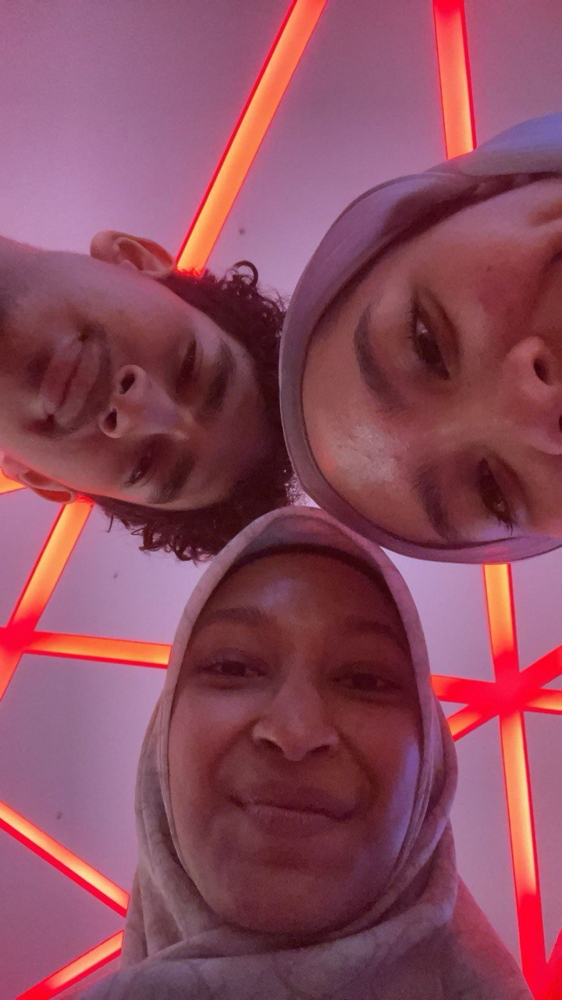
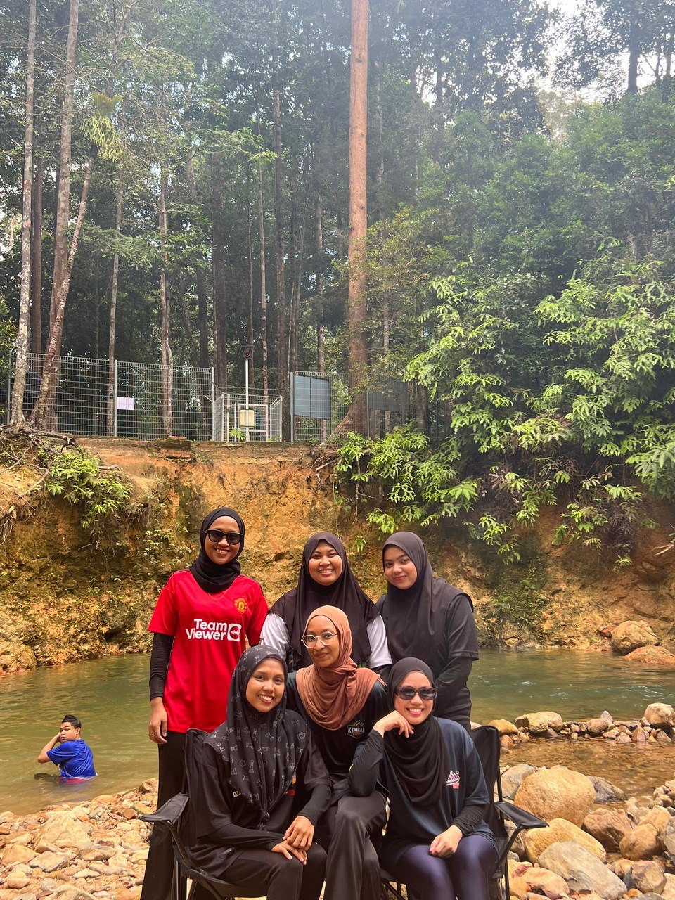

My Campus Life in UTHM
Going out with friendsBesides from studying i will go out with my friends. I love going out with friends because it’s always a good time, no matter what we’re doing. There’s something about being around people who really know you that just makes everything more fun and relaxing. We can talk about anything, laugh about the silliest things, and just enjoy each other’s company. Whether we’re trying something new, going to a favorite spot, or even just hanging out somewhere low-key, being with friends makes everything feel a little more exciting. It’s those little moments and inside jokes that make it so special, and I always end up feeling happier and more connected after a good time out with them. |
 |
Went to river tripGoing on a river trip was such an amazing experience! There’s something so calming about being out on the water, with the sound of the river flowing and the feeling of being surrounded by nature. Paddling down the river, I got to take in the beautiful scenery, from lush trees to the open sky—it’s like the whole world slows down. There were moments of excitement, too, especially if the current picked up, making it a little adventure. And the best part was being able to just relax, unplug, and enjoy the simplicity of it all. It was a refreshing break, and I came back feeling so much more grounded and at peace. |
 |